Graphing¶
{kind=link}
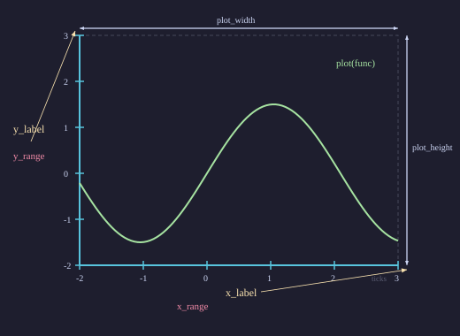
Graph¶
- class Graph(func, x_range=(-5, 5), y_range=None, x=260, y=100, plot_width=1400, plot_height=880, **styling)¶
Bases:
AxesFull plot with axes, ticks, labels, and a plotted function curve. The most common starting point for mathematical visualizations.
- Parameters:
func (callable) – Function to plot (
f(x) -> y).x_range (tuple) –
(x_min, x_max)or(x_min, x_max, step).y_range (tuple) –
(y_min, y_max)orNonefor auto-ranging.x (float) – Plot area left edge in SVG coordinates.
y (float) – Plot area top edge in SVG coordinates.
plot_width (float) – Plot area width in pixels.
plot_height (float) – Plot area height in pixels.
Example: sine curve
# Simple sine curve g = Graph(math.sin, x_range=(-2*math.pi, 2*math.pi), y_range=(-1.5, 1.5)) g.fadein(start=0, end=1) v.add(g)
Example: Sine Curve
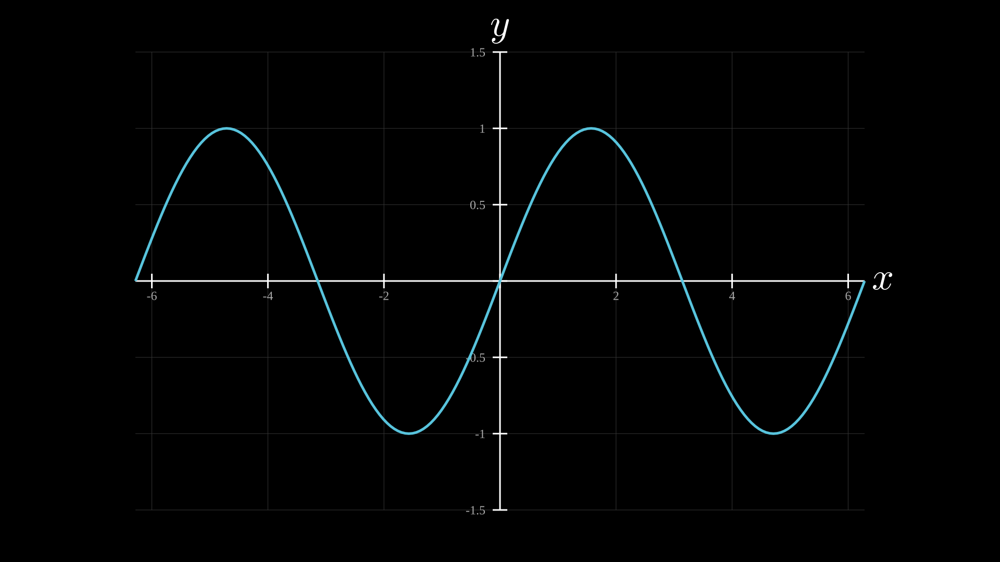
"""Simple sine curve on Graph axes.""" from vectormation.objects import * import math v = VectorMathAnim() v.set_background() g = Graph(math.sin, x_range=(-2 * math.pi, 2 * math.pi), y_range=(-1.5, 1.5)) g.add_coordinates() g.add_grid() v.add(g) v.show(end=0)
Example: quadratic with annotations
# Quadratic with annotations g = Graph(lambda x: x**2 - 3, x_range=(-4, 4), y_range=(-4, 14)) g.add_coordinates() g.add_grid() g.add_dot_label(2, lambda x: x**2 - 3, "min", fill='#E74C3C') v.add(g)
Example: Quadratic with Annotations
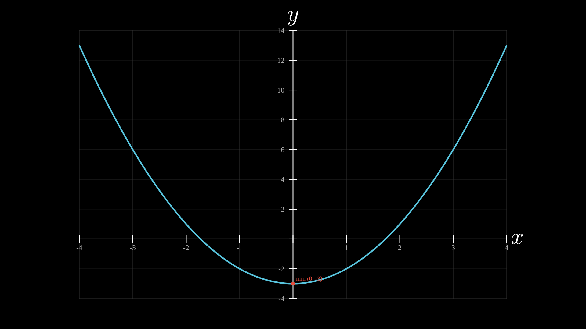
"""Quadratic with annotations: vertex label and grid.""" from vectormation.objects import * v = VectorMathAnim() v.set_background() func = lambda x: x**2 - 3 g = Graph(func, x_range=(-4, 4), y_range=(-4, 14)) g.add_coordinates() g.add_grid() g.add_dot_label(0, -3, label='min (0, -3)', dot_color='#E74C3C') g.get_vertical_line(0, y_val=-3, stroke='#E74C3C', stroke_dasharray='6 4', stroke_width=2) v.add(g) v.show(end=0)
Example: Graph with area shading

Graph with shaded area under the curve.
"""Graph with area shading.""" from vectormation.objects import * import math v = VectorMathAnim() v.set_background() g = Graph(math.sin, x_range=(0, 2 * math.pi), y_range=(-1.5, 1.5)) g.add_coordinates() g.add_grid() area = g.get_area(math.sin, x_range=(0, math.pi), fill='#3498DB', fill_opacity=0.3) v.add(g, area) v.show(end=2)
Adding Curves
- add_function(func, label=None, label_direction='up', num_points=200, x_range=None, **styling)¶
Add another function curve to the plot. Returns a
Pathobject whosedattribute is dynamically recalculated when axes ranges change.- Parameters:
func (callable) – Function
f(x) -> y.label (str) – Optional text label near the curve.
label_direction (str) – Placement of label (
'up','down','left','right').num_points (int) – Sampling resolution for the curve.
x_range (tuple) – Override x-range for this curve only.
- plot(func, label=None, label_direction='up', num_points=200, x_range=None, **styling)¶
Alias for
add_function(). Returns aPathobject.
- plot_line_graph(x_values, y_values, **styling)¶
Plot a line graph from data points. Connects the points with line segments.
Example: line graph from data points
g = Axes(x_range=(0, 10), y_range=(0, 100)) g.plot_line_graph([1, 3, 5, 7, 9], [20, 45, 30, 80, 60], stroke='#E74C3C')
Example: Line Graph from Data
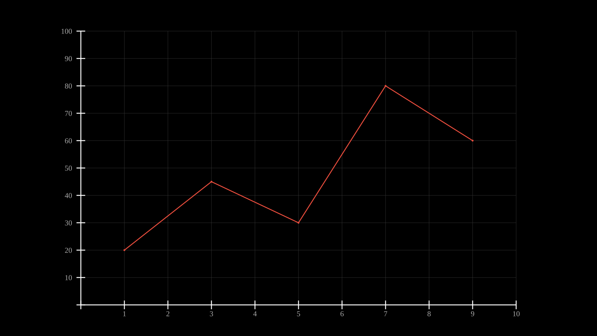
"""Line graph from data points.""" from vectormation.objects import * v = VectorMathAnim() v.set_background() ax = Axes(x_range=(0, 10), y_range=(0, 100)) ax.add_coordinates() ax.add_grid() ax.plot_line_graph([1, 3, 5, 7, 9], [20, 45, 30, 80, 60], stroke='#E74C3C', stroke_width=3) v.add(ax) v.show(end=0)
Coordinate Conversion
- coords_to_point(x, y, time=0)¶
Convert math coordinates
(x, y)to SVG pixel coordinates. Respects animated axis ranges.- Parameters:
x (float) – Mathematical x-coordinate.
y (float) – Mathematical y-coordinate.
time (float) – Time for animated ranges.
- Returns:
(svg_x, svg_y)
- input_to_graph_point(x, func, time=0)¶
Get the SVG point on a function at mathematical x-value.
- Returns:
(svg_x, svg_y)
- graph_position(func, x_attr)¶
Return a lambda that gives the SVG position of a point following a function curve as x_attr changes over time. Useful for animating dots along curves.
Example: dot following a curve
x_val = attributes.Real(0, 0) x_val.move_to(0, 3, 5) # animate x from 0 to 5 over t=0..3 dot.c.set_onward(0, graph.graph_position(func, x_val))
Example: Dot on Curve
"""Dot following a curve using graph_position.""" from vectormation.objects import * import math v = VectorMathAnim() v.set_background() func = math.sin g = Graph(func, x_range=(-2 * math.pi, 2 * math.pi), y_range=(-1.5, 1.5)) g.add_coordinates() g.add_grid() g.fadein(start=0, end=0.5) from vectormation import attributes x_val = attributes.Real(-2 * math.pi, -2 * math.pi) x_val.move_to(0, 3, 2 * math.pi) dot = Dot(r=10, fill='#E74C3C', z=5, creation=0.5) dot.c.set_onward(0.5, g.graph_position(func, x_val)) v.add(g, dot) v.show(end=4)
Areas and Shading
- get_area(curve_or_func, x_range=None, bounded_graph=None, **styling)¶
Shaded area under a curve (or between two curves). Returns a
Paththat dynamically updates when axis ranges change.- Parameters:
curve_or_func – A Path returned by
plot(), or a callable.x_range (tuple) –
(x_min, x_max)to restrict the shaded region.bounded_graph – Another curve to shade between.
Example: shaded area under sine curve
g = Graph(math.sin, x_range=(0, 2*math.pi), y_range=(-1.5, 1.5)) curve = g.plot(math.sin, stroke='#3498DB') area = g.get_area(curve, x_range=(0, math.pi), fill='#3498DB', fill_opacity=0.3) v.add(g, area)
Example: Shaded Area under Sine
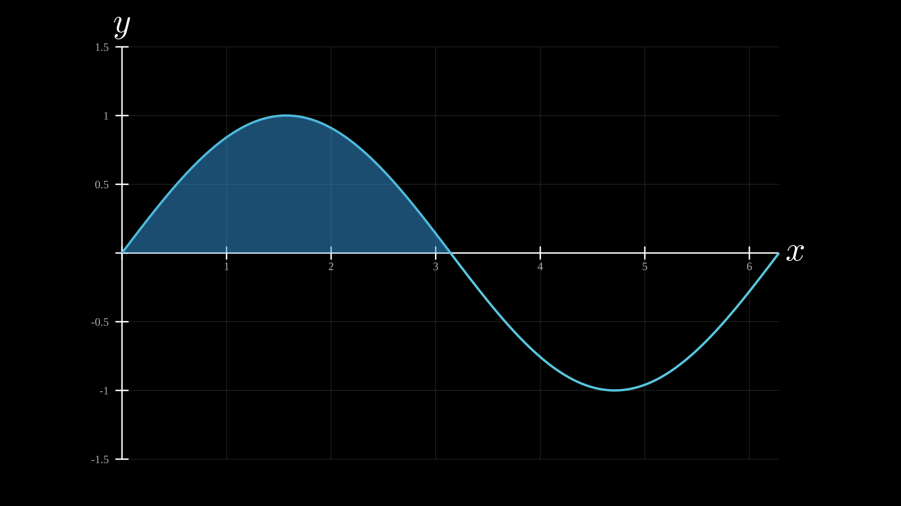
"""Shaded area under sine curve using get_area.""" from vectormation.objects import * import math v = VectorMathAnim() v.set_background() g = Graph(math.sin, x_range=(0, 2 * math.pi), y_range=(-1.5, 1.5)) g.add_coordinates() g.add_grid() area = g.get_area(math.sin, x_range=(0, math.pi), fill='#3498DB', fill_opacity=0.3) v.add(g, area) v.show(end=0)
- get_area_between(func1, func2, x_range=None, **styling)¶
Shaded area between two curves. Returns a
Path.Example: area between two curves
g = Axes(x_range=(-3, 3), y_range=(-2, 10)) g.plot(lambda x: x**2, stroke='#E74C3C') g.plot(lambda x: 2*x + 1, stroke='#3498DB') area = g.get_area_between(lambda x: x**2, lambda x: 2*x + 1, x_range=(-1, 3), fill='#F39C12', fill_opacity=0.3)
Example: Area Between Curves
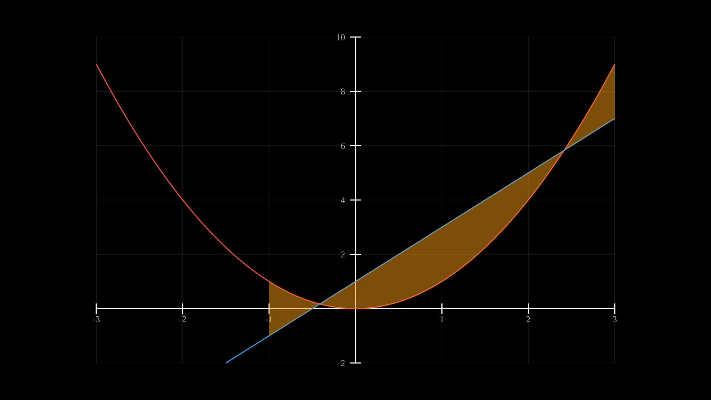
"""Area between two curves using get_area_between.""" from vectormation.objects import * v = VectorMathAnim() v.set_background() ax = Axes(x_range=(-3, 3), y_range=(-2, 10)) ax.add_coordinates() ax.add_grid() ax.plot(lambda x: x**2, stroke='#E74C3C', stroke_width=3) ax.plot(lambda x: 2 * x + 1, stroke='#3498DB', stroke_width=3) area = ax.get_area_between(lambda x: x**2, lambda x: 2 * x + 1, x_range=(-1, 3), fill='#F39C12', fill_opacity=0.3) v.add(ax, area) v.show(end=0)
- get_riemann_rectangles(func, x_range, dx=0.1, **styling)¶
Riemann sum rectangles under a curve. Returns a
DynamicObjectthat rebuilds rectangles each frame (supports animated ranges).- Parameters:
func (callable) – Function to integrate.
x_range (tuple) –
(x_min, x_max)range for rectangles.dx (float) – Width of each rectangle in math units.
Example: Riemann sum
g = Graph(lambda x: x**2, x_range=(0, 3), y_range=(0, 10)) rects = g.get_riemann_rectangles(lambda x: x**2, (0, 3), dx=0.3, fill='#3498DB', fill_opacity=0.4) v.add(g, rects)
Example: Riemann Sum
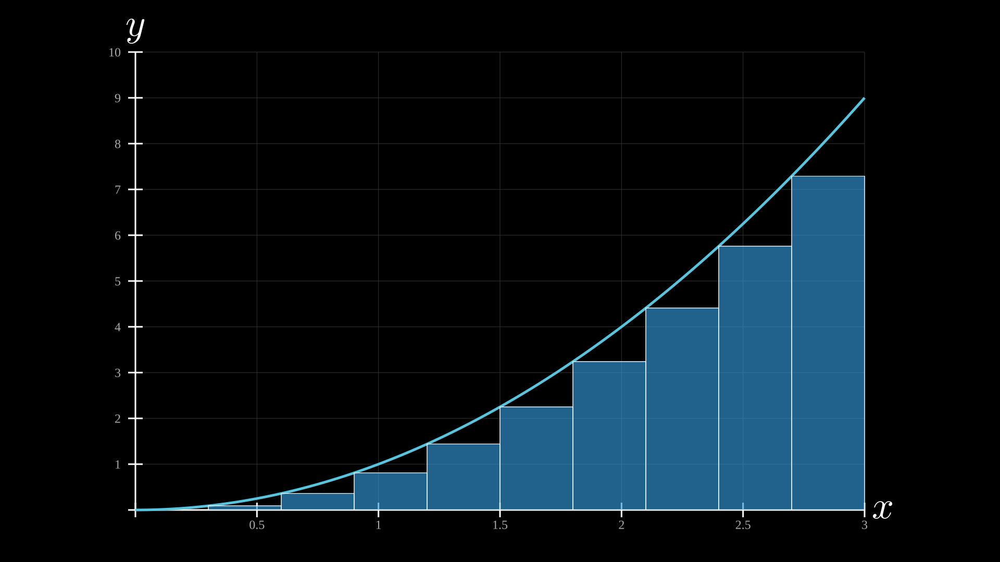
"""Riemann sum rectangles under a curve.""" from vectormation.objects import * v = VectorMathAnim() v.set_background() func = lambda x: x**2 g = Graph(func, x_range=(0, 3), y_range=(0, 10)) g.add_coordinates() g.add_grid() rects = g.get_riemann_rectangles(func, (0, 3), dx=0.3, fill='#3498DB', fill_opacity=0.4) v.add(g, rects) v.show(end=0)
Lines and Markers
- get_vertical_line(x, y_val=None, **styling)¶
Vertical line at mathematical x. If y_val is given, draws from x-axis to that value; otherwise draws to the top of the plot. Returns a
Line.
- get_vertical_lines(func, x_values, **styling)¶
Multiple vertical lines from x-axis to curve. Returns a
VCollection.
- get_tangent_line(func, x, length=200, **styling)¶
Tangent line to a function at x (numerical derivative). Returns a
Line.Example: tangent line on sine curve
g = Graph(math.sin, x_range=(0, 2*math.pi)) tangent = g.get_tangent_line(math.sin, math.pi/4, stroke='#E74C3C') v.add(g, tangent)
Example: animated tangent line
Tangent line sweeping along a curve.
"""Animated tangent line sliding along a curve.""" from vectormation.objects import * v = VectorMathAnim() v.set_background() func = lambda x: x ** 3 - 3 * x g = Graph(func, x_range=(-3, 3), y_range=(-5, 5)) g.add_coordinates() g.add_grid() g.fadein(start=0, end=1) tangent = g.animated_tangent_line(func, -2.5, 2.5, start=1, end=4, length=350, stroke='#E74C3C', stroke_width=4) tangent.fadein(start=1, end=1.3) v.add(g, tangent) v.show(end=5)
- get_secant_line(func, x1, x2, length=200, **styling)¶
Secant line through two points on a function. Returns a
Line.
- get_dashed_line(x1, y1, x2, y2, **styling)¶
Dashed line between two math coordinates. Returns a
Line.
- get_line_from_to(x1, y1, x2, y2, **styling)¶
Solid line between two math coordinates. Returns a
Line.
- get_rect(x, func, width=None, **styling)¶
A single rectangle from the x-axis to
func(x)at the given x-value. Uses animated lambdas for dynamic updates.
Annotations and Labels
- add_coordinates(**styling)¶
Add coordinate tick labels to both axes.
- add_grid(**styling)¶
Add background grid lines aligned to tick marks.
- Parameters:
stroke – Grid line color (default
'#333').stroke_width – Grid line width.
- add_title(text, **styling)¶
Add a title above the axes.
- add_legend(entries, **styling)¶
Add a legend with color swatches.
- Parameters:
entries (list) – List of
(label, color)pairs.
Example: legend with multiple curves
g = Axes(x_range=(-5, 5), y_range=(-2, 2)) g.plot(math.sin, stroke='#E74C3C', label='sin(x)') g.plot(math.cos, stroke='#3498DB', label='cos(x)') g.add_legend([('sin(x)', '#E74C3C'), ('cos(x)', '#3498DB')])
Example: Legend with Curves
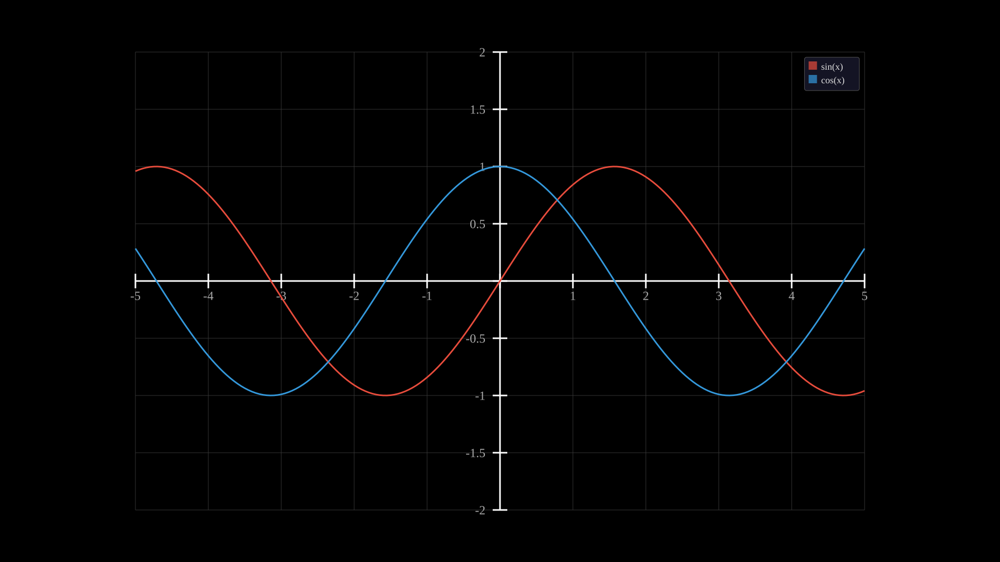
"""Legend with multiple curves.""" from vectormation.objects import * import math v = VectorMathAnim() v.set_background() ax = Axes(x_range=(-5, 5), y_range=(-2, 2)) ax.add_coordinates() ax.add_grid() ax.plot(math.sin, stroke='#E74C3C', stroke_width=3) ax.plot(math.cos, stroke='#3498DB', stroke_width=3) ax.add_legend([('sin(x)', '#E74C3C'), ('cos(x)', '#3498DB')]) v.add(ax) v.show(end=0)
- add_dot_label(x, y, label=None, **styling)¶
Add a labelled dot at
(x, y)in logical coordinates.
- add_arrow_annotation(x, y, text, **styling)¶
Add a labelled arrow pointing at
(x, y).
- add_asymptote(x=None, y=None, **styling)¶
Add a dashed asymptote line (vertical at x or horizontal at y).
- add_horizontal_label(y, text, **styling)¶
Add a text label at a horizontal line value.
- add_vertical_label(x, text, **styling)¶
Add a text label at a vertical line value.
- coords_label(x, y, text=None, **styling)¶
Add a coordinate label at
(x, y)showing the coordinates.
- add_cursor(**styling)¶
Add an interactive cursor dot that follows the mouse (browser mode only).
- add_trace(func, **styling)¶
Add a trace dot that follows a function curve.
Shading Regions
- highlight_x_range(x1, x2, **styling)¶
Shade a vertical strip between x1 and x2.
- highlight_y_range(y1, y2, **styling)¶
Shade a horizontal strip between y1 and y2.
Statistical and Advanced Plots
- plot_scatter(x_values, y_values, **styling)¶
Scatter plot with dots at each data point.
Example: scatter plot with regression line
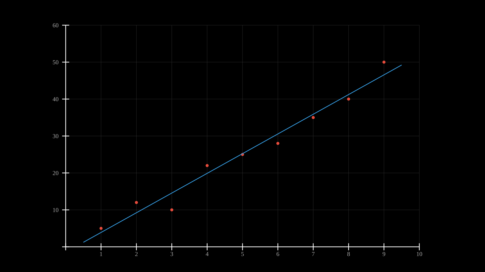
Scatter data with a least-squares regression line overlay.
"""Scatter plot with regression line.""" from vectormation.objects import * v = VectorMathAnim() v.set_background() ax = Axes(x_range=(0, 10), y_range=(0, 60)) ax.add_coordinates() ax.add_grid() x_data = [1, 2, 3, 4, 5, 6, 7, 8, 9] y_data = [5, 12, 10, 22, 25, 28, 35, 40, 50] ax.plot_scatter(x_data, y_data, r=6, fill='#E74C3C') ax.add_regression_line(x_data, y_data, stroke='#3498DB', stroke_width=3) v.add(ax) v.show(end=1)
- plot_step(x_values, y_values, **styling)¶
Step function plot from paired x/y value lists.
- plot_polar(func, **styling)¶
Polar function plot (
r = f(theta)).
- plot_implicit(func, **styling)¶
Implicit curve
f(x, y) = 0via marching squares algorithm.
- plot_histogram(values, bins=10, **styling)¶
Histogram from raw data values.
Example: histogram
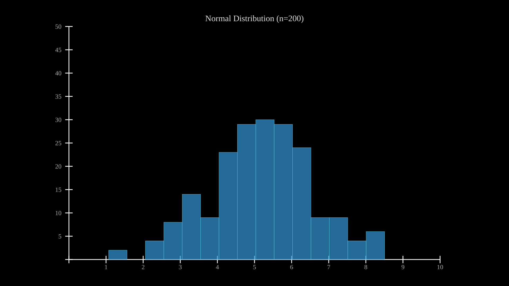
Histogram of normally-distributed data.
"""Histogram from data.""" from vectormation.objects import * import random v = VectorMathAnim() v.set_background() random.seed(42) data = [random.gauss(5, 1.5) for _ in range(200)] ax = Axes(x_range=(0, 10), y_range=(0, 50)) ax.add_coordinates() ax.plot_histogram(data, bins=15, fill='#3498DB', fill_opacity=0.7) ax.add_title('Normal Distribution (n=200)') v.add(ax) v.show(end=1)
- plot_vector_field(func, **styling)¶
Vector field overlay on axes. func takes
(x, y)and returns(dx, dy).
Example: vector field
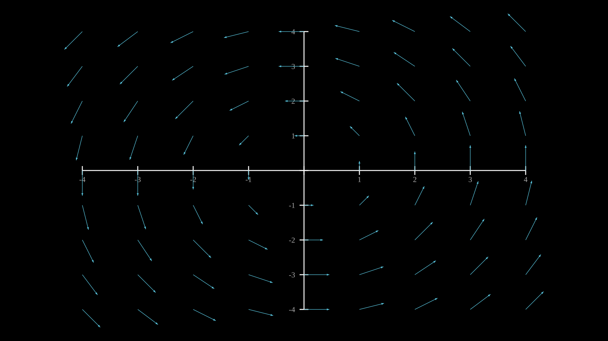
A rotational vector field
(-y, x)plotted on axes."""2D vector field on axes.""" from vectormation.objects import * v = VectorMathAnim() v.set_background() ax = Axes(x_range=(-4, 4), y_range=(-4, 4)) ax.add_coordinates() ax.plot_vector_field(lambda x, y: (-y, x), x_step=1, y_step=1, stroke='#58C4DD') v.add(ax) v.show(end=1)
Calculus Visualizations
- plot_derivative(func, h=0.001, num_points=200, **styling)¶
Plot the numerical derivative of func using central differences. Default style: dashed green line.
- plot_antiderivative(func, x0=None, num_points=200, **styling)¶
Plot the numerical antiderivative (cumulative integral) of func using the trapezoidal rule. x0 defaults to x_min. Default style: dashed red line.
Example: derivative and antiderivative
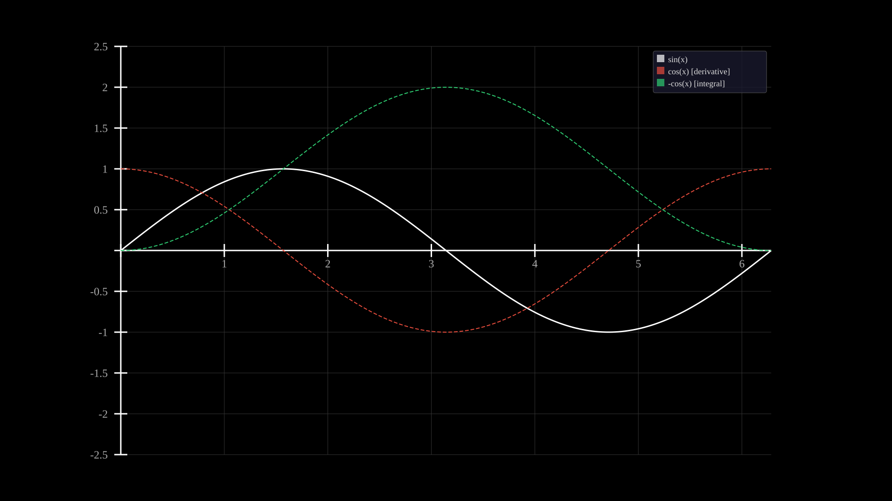
A sine curve with its numerical derivative (cosine) and antiderivative (-cosine) plotted as dashed lines.
"""Function with its derivative and antiderivative.""" from vectormation.objects import * import math v = VectorMathAnim() v.set_background() func = lambda x: math.sin(x) ax = Axes(x_range=(0, 2 * math.pi), y_range=(-2.5, 2.5)) ax.add_coordinates() ax.add_grid() ax.plot(func, stroke='#FFFFFF', stroke_width=3) ax.plot_derivative(func, stroke='#E74C3C', stroke_width=2, stroke_dasharray='8 4') ax.plot_antiderivative(func, stroke='#2ECC71', stroke_width=2, stroke_dasharray='8 4') ax.add_legend([("sin(x)", '#FFFFFF'), ("cos(x) [derivative]", '#E74C3C'), ("-cos(x) [integral]", '#2ECC71')]) v.add(ax) v.show(end=1)
- get_trapezoidal_rule(func, x_range, dx=0.5, **styling)¶
Visualize the trapezoidal rule approximation of the area under func as a series of shaded trapezoids.
Vectors, Intervals, and Regression
- add_vector(x, y, **styling)¶
Add a vector arrow from the origin to
(x, y).
- add_interval(x1, x2, y=0, **styling)¶
Add a horizontal interval marker between x1 and x2.
- add_zero_line(**styling)¶
Add a horizontal line at
y = 0.
- add_slope_field(func, **styling)¶
Add a slope field (tangent segments at grid points).
- add_regression_line(x_values, y_values, **styling)¶
Add a least-squares regression line.
- add_error_bars(x_values, y_values, errors, **styling)¶
Add error bars at data points.
- add_min_max_labels(func, x_range=None, **styling)¶
Add labels at the minimum and maximum of a function.
- add_secant_fade(func, x, dx_start=2, dx_end=0.01, **styling)¶
Animate a secant line converging to a tangent as
dxshrinks.
Animated Ranges
The axis attributes
x_min,x_max,y_min,y_maxare animatableRealattributes. All curves and decorations automatically resample when ranges change.- animate_range(start, end, x_range=None, y_range=None, easing=smooth)¶
Animate the axis range to new bounds.
- Parameters:
x_range (tuple) –
(new_xmin, new_xmax)orNone.y_range (tuple) –
(new_ymin, new_ymax)orNone.
Example: animated axis range
g = Graph(math.sin, x_range=(-5, 5), y_range=(-2, 2)) g.animate_range(start=1, end=3, x_range=(-1, 1), y_range=(-1.5, 1.5))
Example: Animated Axis Range
"""Animated axis range zoom.""" from vectormation.objects import * import math v = VectorMathAnim() v.set_background() g = Graph(math.sin, x_range=(-5, 5), y_range=(-2, 2)) g.add_coordinates() g.add_grid() g.fadein(start=0, end=0.5) g.animate_range(start=1, end=3, x_range=(-1, 1), y_range=(-1.5, 1.5)) v.add(g) v.show(end=4)
Axes¶
- class Axes(x_range=(-5, 5), y_range=None, x=260, y=100, plot_width=1400, plot_height=880, **styling)¶
Bases:
VCollectionStandalone coordinate axes without an initial function plotted. Has all the same methods as
Graph.Use when you want to build up a plot incrementally by adding functions, scatter plots, and annotations separately.
Example: incremental plot with multiple curves
ax = Axes(x_range=(0, 10), y_range=(0, 100)) ax.add_grid() ax.add_coordinates() curve1 = ax.plot(lambda x: x**2, stroke='#E74C3C', label='x²') curve2 = ax.plot(lambda x: 10*x, stroke='#3498DB', label='10x') ax.add_legend([('#E74C3C', 'x²'), ('#3498DB', '10x')]) v.add(ax)
Example: Incremental Plot
"""Incremental plot: add curves one by one.""" from vectormation.objects import * v = VectorMathAnim() v.set_background() ax = Axes(x_range=(0, 10), y_range=(0, 100)) ax.add_grid() ax.add_coordinates() ax.fadein(start=0, end=0.5) curve1 = ax.plot(lambda x: x**2, stroke='#E74C3C', stroke_width=3) curve1.create(start=0.5, end=1.5) curve2 = ax.plot(lambda x: 10 * x, stroke='#3498DB', stroke_width=3) curve2.create(start=1.5, end=2.5) ax.add_legend([('x\u00b2', '#E74C3C'), ('10x', '#3498DB')]) v.add(ax) v.show(end=3)
Example: Axes
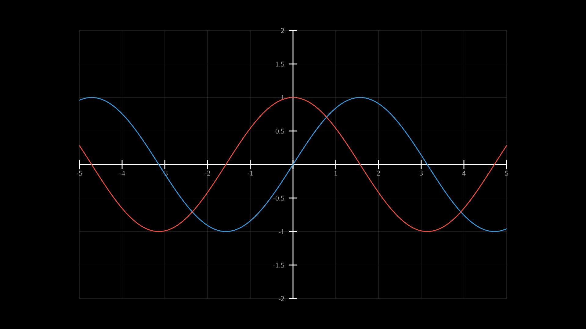
"""Basic Axes with labels and a plotted function.""" from vectormation.objects import * import math v = VectorMathAnim() v.set_background() ax = Axes(x_range=(-5, 5), y_range=(-2, 2)) ax.add_coordinates() ax.add_grid() ax.plot(math.sin, stroke='#3498DB', stroke_width=3) ax.plot(math.cos, stroke='#E74C3C', stroke_width=3) v.add(ax) v.show(end=0)
FunctionGraph¶
- class FunctionGraph(func, x_range=(-5, 5), y_range=None, num_points=200, x=120, y=60, width=1440, height=840, **styling)¶
Bases:
LinesFunction plot as a polyline (no axes, ticks, or labels). Use when you need a lightweight function curve without the overhead of Axes.
- Parameters:
func (callable) – Function to plot.
num_points (int) – Number of sample points.
Example: damped sine wave
curve = FunctionGraph(lambda x: math.sin(x) * math.exp(-x/5), x_range=(0, 20), stroke='#2ECC71', stroke_width=3) curve.create(start=0, end=2)
Example: Function Graph

"""FunctionGraph shape.""" import math from vectormation.objects import * v = VectorMathAnim() v.set_background() g = Graph(math.sin, x_range=(-2*math.pi, 2*math.pi), y_range=(-1.5, 1.5)) v.add(g) v.show(end=0)
Example: Damped Sine Wave
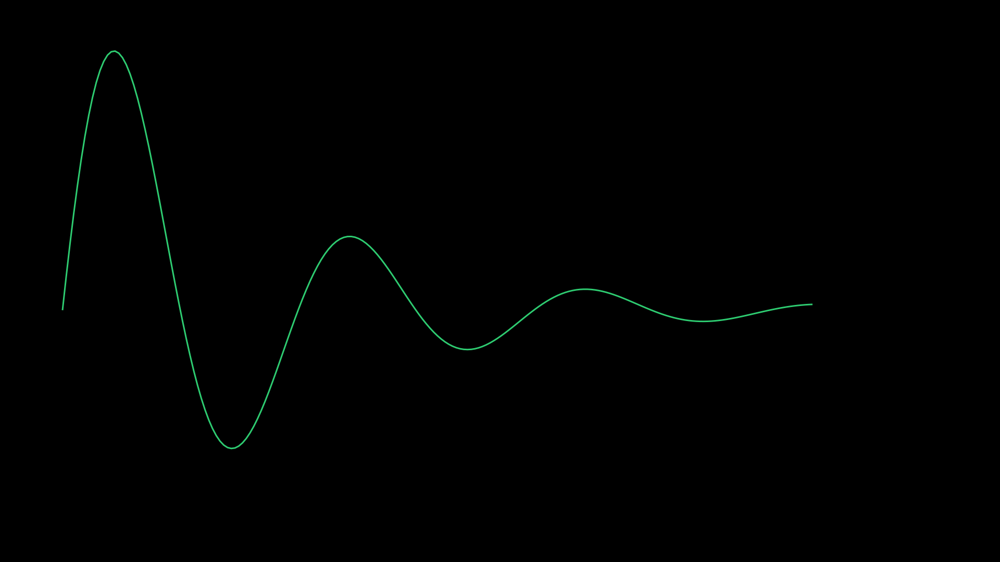
"""Damped sine wave using FunctionGraph.""" from vectormation.objects import * import math v = VectorMathAnim() v.set_background() curve = FunctionGraph(lambda x: math.sin(x) * math.exp(-x / 5), x_range=(0, 20), stroke='#2ECC71', stroke_width=3) v.add(curve) v.show(end=0)
ParametricFunction¶
- class ParametricFunction(func, t_range=(0, 1), num_points=200, **styling)¶
Bases:
LinesCurve defined by a parametric function
f(t) -> (x, y).- Parameters:
func (callable) – Parametric function returning
(x, y)tuples.t_range (tuple) –
(t_min, t_max)parameter interval.num_points (int) – Number of sample points.
- get_point(t)¶
Return
(x, y)at parameter value t.
Example: parametric spiral
import math spiral = ParametricFunction( lambda t: (960 + 200*t*math.cos(6*t), 540 + 200*t*math.sin(6*t)), t_range=(0, math.pi), num_points=300, stroke='#FC6255', stroke_width=3) spiral.create(start=0, end=2)
Example: Parametric Spiral
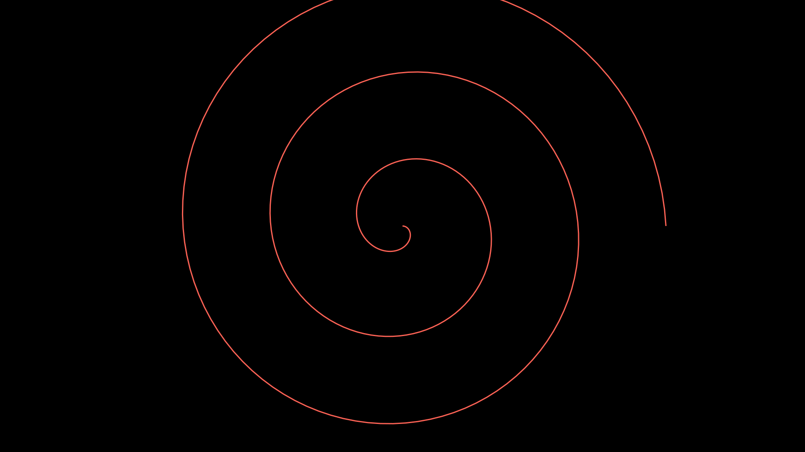
"""Parametric spiral using ParametricFunction.""" from vectormation.objects import * import math v = VectorMathAnim() v.set_background() spiral = ParametricFunction( lambda t: (960 + 200 * t * math.cos(6 * t), 540 + 200 * t * math.sin(6 * t)), t_range=(0, math.pi), num_points=300, stroke='#FC6255', stroke_width=3) v.add(spiral) v.show(end=0)
NumberLine¶
{kind=link}
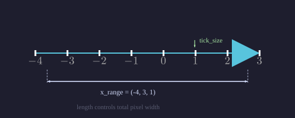
- class NumberLine(x_range=(-5, 5, 1), length=720, x=240, y=540, tick_size=28, include_numbers=True, include_arrows=True, **styling)¶
Bases:
VCollectionHorizontal number line with tick marks and optional labels.
- Parameters:
x_range (tuple) –
(start, end, step)or(start, end)with auto step.length (float) – Line length in pixels.
tick_size (float) – Tick mark height in pixels.
include_numbers (bool) – Show tick labels.
include_arrows (bool) – Show endpoint arrows.
- number_to_point(value)¶
Convert a number to its SVG x-coordinate on the line.
- Returns:
(svg_x, svg_y)
- point_to_number(x, y=None)¶
Convert an SVG x-coordinate (or
(x, y)tuple) back to a number.
- add_pointer(value, label=None, color='#FF6B6B', size=12, creation=0, z=1)¶
Add an animated pointer triangle above the number line at value.
- add_dot_at(value, **styling)¶
Add a dot at the given value on the number line.
- add_label(value, text, buff=10, font_size=24, side='below', **kwargs)¶
Add a text label at a given value on the line.
- add_segment(v1, v2, **styling)¶
Highlight a segment of the line between two values.
Example: number line with pointer and segment
nl = NumberLine(x_range=(-3, 3, 1), length=800) nl.add_pointer(1.5, label='x') nl.add_segment(-1, 2, color='#3498DB') v.add(nl)
Example: NumberLine with pointer
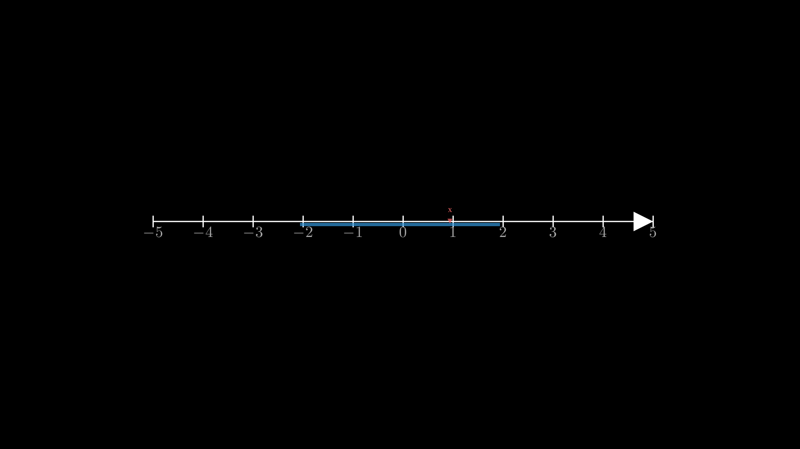
Number line with a pointer indicator.
"""Number line with pointer and segment.""" from vectormation.objects import * v = VectorMathAnim() v.set_background() nl = NumberLine(x_range=(-5, 5, 1), length=1200) nl.center_to_pos() nl.add_pointer(2, label='x') nl.add_segment(-1, 3, color='#3498DB') v.add(nl) v.show(end=2)
NumberPlane¶
- class NumberPlane(x_range=None, y_range=None, cx=960, cy=540, width=1920, height=1080, **styling)¶
Bases:
VCollectionFull coordinate grid (background grid with axes). Covers the entire canvas by default — useful as a background layer.
- Parameters:
x_range (tuple) –
(x_min, x_max)orNonefor auto.y_range (tuple) –
(y_min, y_max)orNonefor auto.
- coords_to_point(x, y)¶
Convert math coordinates to SVG coordinates.
- point_to_coords(px, py)¶
Convert SVG coordinates to math coordinates.
- get_vector(x, y, creation=0, **kwargs)¶
Create a vector
Arrowfrom the origin to(x, y)and add it to the plane.
- apply_complex_function(func, start=0, end=1, easing=smooth)¶
Animate a complex-valued transformation of the grid.
Example: complex function transformation
plane = NumberPlane(x_range=(-5, 5), y_range=(-5, 5)) plane.apply_complex_function(lambda z: z**2, start=1, end=3) v.add(plane)
Example: Complex Transform
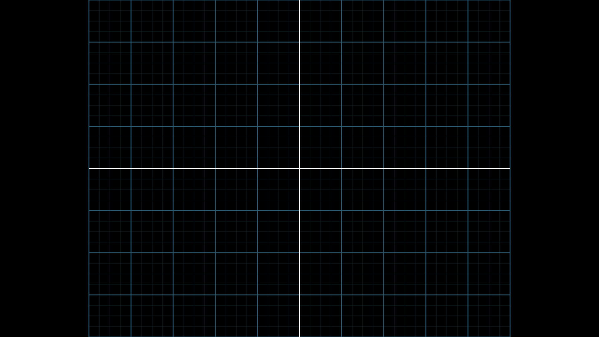
"""Complex function transformation on NumberPlane.""" from vectormation.objects import * v = VectorMathAnim() v.set_background() plane = NumberPlane(x_range=(-5, 5), y_range=(-5, 5)) v.add(plane) v.show(end=0)
Example: NumberPlane
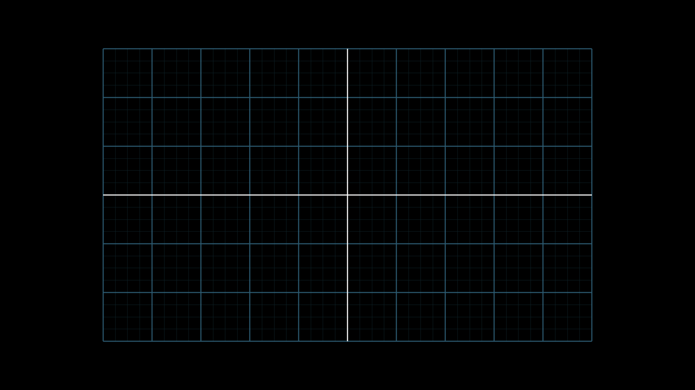
"""NumberPlane: coordinate grid background.""" from vectormation.objects import * v = VectorMathAnim() v.set_background() plane = NumberPlane(x_range=(-5, 5), y_range=(-3, 3)) v.add(plane) v.show(end=0)
ComplexPlane¶
- class ComplexPlane(x_range=(-5, 5), y_range=(-5, 5), show_grid=True, **styling)¶
Bases:
AxesComplex number plane with real/imaginary axes and gridlines. Provides conversion between complex numbers and SVG coordinates.
- number_to_point(z)¶
Convert a complex number to SVG coordinates.
- Parameters:
z (complex) – Complex number.
- Returns:
(svg_x, svg_y)
- point_to_number(px, py)¶
Convert SVG coordinates to a complex number.
- add_complex_label(z, text=None, **styling)¶
Add a labelled dot at the complex number z.
Example: labelled complex numbers
cp = ComplexPlane(x_range=(-3, 3), y_range=(-3, 3)) cp.add_complex_label(1+2j, 'z₁') cp.add_complex_label(-1+1j, 'z₂') v.add(cp)
Example: Labelled Complex Plane
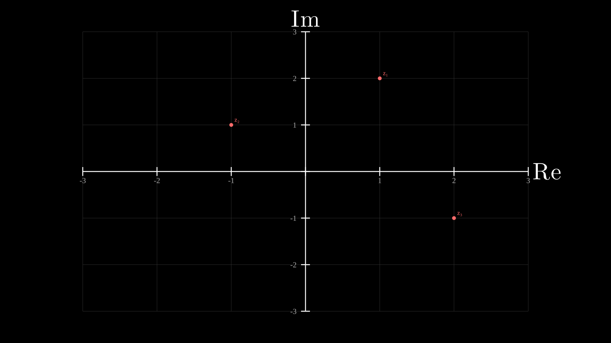
"""Labelled complex numbers on ComplexPlane.""" from vectormation.objects import * v = VectorMathAnim() v.set_background() cp = ComplexPlane(x_range=(-3, 3), y_range=(-3, 3)) cp.add_coordinates() cp.add_complex_label(1 + 2j, 'z\u2081') cp.add_complex_label(-1 + 1j, 'z\u2082') cp.add_complex_label(2 - 1j, 'z\u2083') v.add(cp) v.show(end=0)
PolarAxes¶
- class PolarAxes(r_range=(0, 5), cx=960, cy=540, radius=400, **styling)
Bases:
VCollectionPolar coordinate axes with radial and angular grid lines.
- Parameters:
r_range (tuple) –
(r_min, r_max)for the radial axis.cx (float) – Center x.
cy (float) – Center y.
radius (float) – Radius of the outermost circle in pixels.
- polar_to_point(r, theta)
Convert polar coordinates
(r, theta)to SVG coordinates.
Example: polar axes
pa = PolarAxes(r_range=(0, 3), radius=300) pa.fadein(start=0, end=1) v.add(pa)
Example: PolarAxes
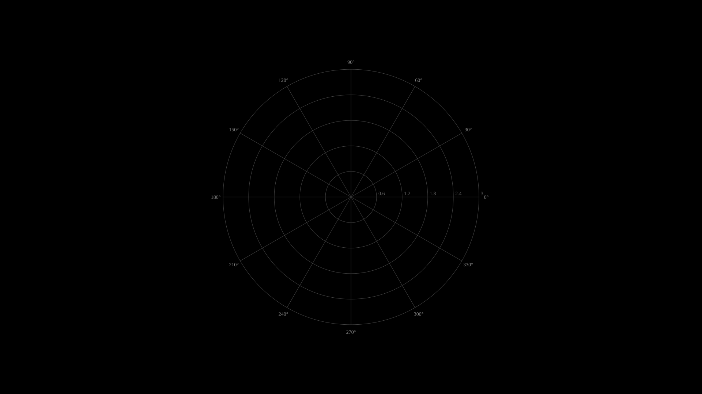
"""PolarAxes: polar coordinate system.""" from vectormation.objects import * v = VectorMathAnim() v.set_background() pa = PolarAxes(r_range=(0, 3), max_radius=350) v.add(pa) v.show(end=0)
PieChart¶
- class PieChart(values, labels=None, colors=None, cx=960, cy=540, r=240, **styling)
Bases:
VCollectionPie chart from a list of values. Supports animated value changes.
- Parameters:
values (list) – Numeric values for each slice.
labels (list) – Optional text labels.
colors (list) – Optional list of fill colours (defaults to palette).
- animate_values(new_values, start=0, end=1, easing=smooth)
Smoothly transition slice sizes to new values.
Example: animated pie chart
pie = PieChart([30, 20, 50], labels=['A', 'B', 'C']) pie.fadein(start=0, end=1) pie.animate_values([40, 40, 20], start=2, end=3)
BarChart¶
- class BarChart(values, labels=None, colors=None, x=120, y=60, width=1440, height=840, bar_spacing=0.2, **styling)
Bases:
VCollectionBar chart from a list of values. Supports animations for adding, removing, reordering, and updating bar values.
- Parameters:
values (list) – Numeric values for each bar.
colors (list) – Optional list of fill colours.
bar_spacing (float) – Space between bars (as a fraction, 0-1).
- animate_values(new_values, start=0, end=1, easing=smooth)
Smoothly transition bars to new values.
- add_bar(value, label=None, color=None, start=0, end=0.5)
Animate adding a new bar to the chart.
- remove_bar(index=-1, start=0, end=0.5)
Animate removing a bar.
- animate_sort(key=None, reverse=False, start=0, end=1)
Animate bars sliding into sorted order.
- get_bar_by_label(label)
Return the bar matching the given label text, or None.
- get_tallest_bar()¶
Return the tallest bar Rectangle.
- get_shortest_bar()¶
Return the shortest bar Rectangle.
Example: bar chart with sorting animation
bc = BarChart([3, 7, 2, 5], labels=['Q1', 'Q2', 'Q3', 'Q4'], colors=['#E74C3C', '#3498DB', '#2ECC71', '#F39C12']) bc.fadein(start=0, end=1) bc.animate_sort(start=2, end=3)
DonutChart¶
- class DonutChart(values, labels=None, colors=None, cx=960, cy=540, r=240, inner_radius=120, **styling)
Bases:
VCollectionDonut chart (pie chart with a hole). Same animation support as PieChart.
RadarChart¶
- class RadarChart(values, labels=None, max_val=None, cx=960, cy=540, radius=250, **styling)
Bases:
VCollectionRadar/spider chart with concentric rings and a data polygon.
- Parameters:
values (list) – Values for each axis (normalized to
max_val).labels (list) – Axis labels.
max_val (float) – Maximum value (default:
max(values)).
Example: radar chart
rc = RadarChart(labels=['Speed', 'Power', 'Defense', 'Magic', 'HP'], values=[0.8, 0.5, 0.9, 0.3, 0.7])
Example: DonutChart and RadarChart
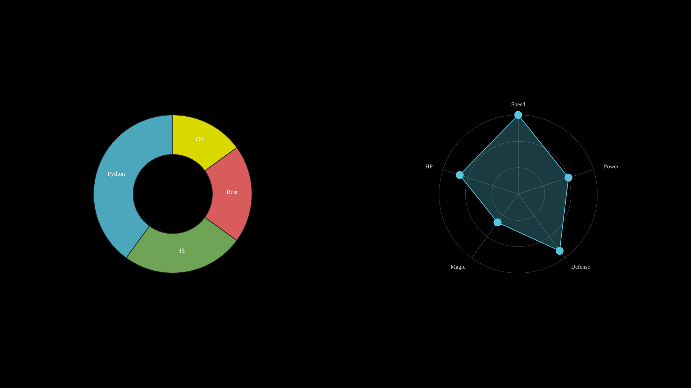
A donut chart and a radar chart displayed side by side.
"""DonutChart and RadarChart side by side."""
from vectormation.objects import *
v = VectorMathAnim()
v.set_background()
donut = DonutChart([40, 25, 20, 15],
labels=['Python', 'JS', 'Rust', 'Go'],
cx=480, cy=540, r=220, inner_radius=110)
radar = RadarChart(values=[0.9, 0.6, 0.8, 0.4, 0.7],
labels=['Speed', 'Power', 'Defense', 'Magic', 'HP'],
cx=1440, cy=540, radius=220)
v.add(donut, radar)
v.show(end=1)
Tick Formatters¶
Custom tick label formatters for axes and number lines:
- pi_format(value)¶
Format values as multiples of π (e.g.
0.5→π/2).
- pi_ticks(vmin, vmax, step=None)¶
Generate tick positions at multiples of π in the range
[vmin, vmax]. Auto-selects step ifNone.
- pi_tex_format(value)¶
Format values as LaTeX multiples of π.
- log_tex_format(value)¶
Format a numeric value as a LaTeX power of 10 (e.g.
$10^{3}$).
- scientific_format(value)¶
Scientific notation formatter (e.g.
2.5×10³).
- engineering_format(value)¶
Engineering notation with SI prefixes (e.g.
2.5k,300μ).
- percent_format(value)¶
Format as percentage (e.g.
0.5→50%).
- degree_format(value)¶
Format as degrees (e.g.
π/2→90°). Values below 2π are treated as radians and converted automatically.
Example: pi-formatted tick labels
from vectormation.objects import pi_format, pi_ticks
import math
g = Graph(math.sin, x_range=(-2*math.pi, 2*math.pi))
g.x_tick_format = pi_format
g.x_tick_positions = pi_ticks(-2*math.pi, 2*math.pi)
Example: Pi-formatted Tick Labels
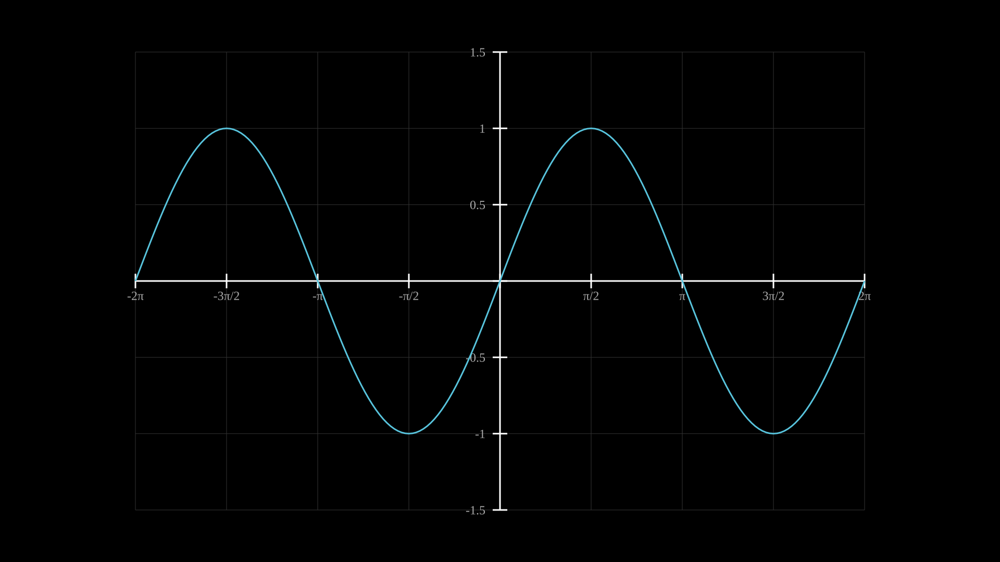
"""Pi-formatted tick labels on a sine graph."""
from vectormation.objects import *
import math
v = VectorMathAnim()
v.set_background()
ax = Axes(x_range=(-2 * math.pi, 2 * math.pi), y_range=(-1.5, 1.5),
x_tick_type='pi')
ax.plot(math.sin, stroke='#58C4DD', stroke_width=3)
ax.add_coordinates()
ax.add_grid()
v.add(ax)
v.show(end=0)